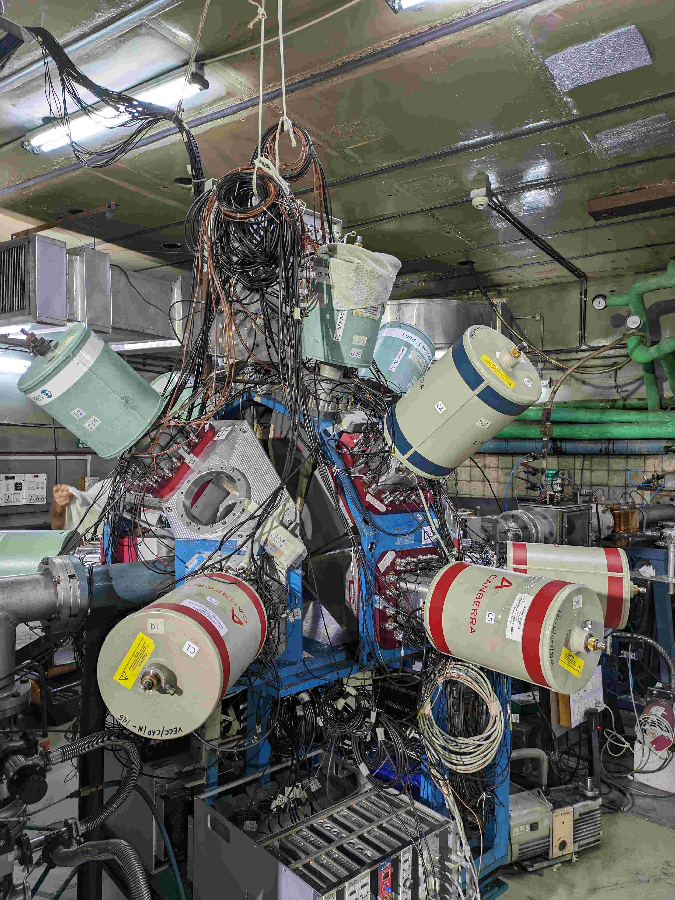
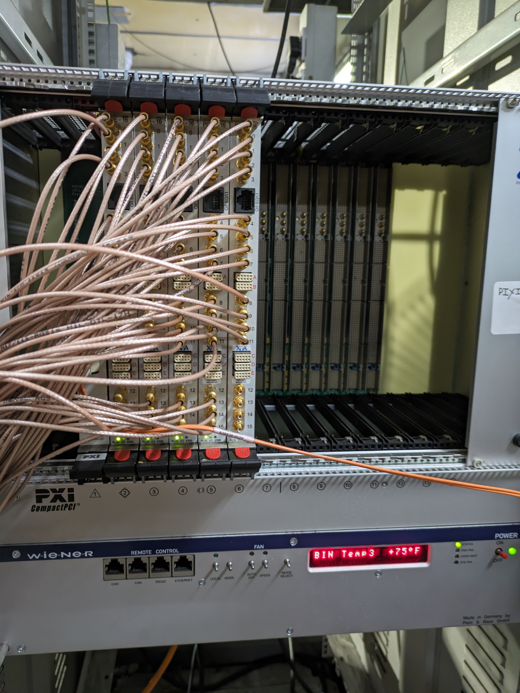

Indian National Gamma Array (INGA) @ VECC
The Indian National Gamma Array (INGA) at VECC consists of Clover detectors, Low Energy Photon detectors, and CeBr scintillator arrays. It is used for high-resolution gamma-ray spectroscopy in nuclear structure studies.

INGA Clover Detector Array consist of 11 Cloverm and one LEPS, later upgraded to 7 more CeBr3 scintillator detectors

Data Acquisition Setup by XIA, USA conceptualized by UGC-DAE CSR, Kolkata Centre (NIM, A 893 (2018) 138–145)
I was part of the collaboration during the 2023–2025 campaign, contributing to detector setup, calibration, and data acquisition (DAQ) operations.
Key Contributions
- Configured DAQ system for coincidence measurements
- Participated in detector calibration using standard sources
- Handled in-beam gamma spectroscopy data collection